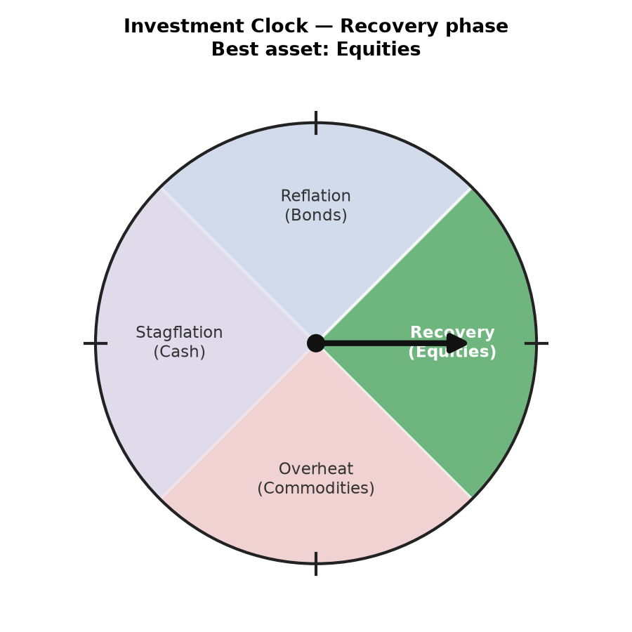
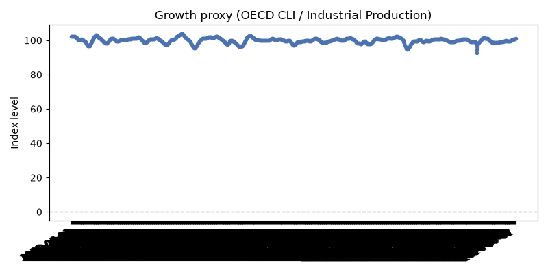
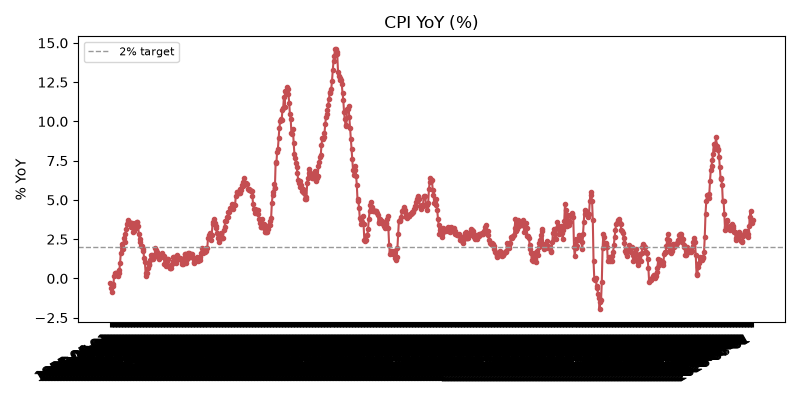

Last updated: 2026-07-22 (data as of 2026-06-01, 854 months on record) · PEOS Daily Dashboard 보기

슬라이더나 월 선택으로 과거 특정 시점의 투자 시계를 확인하세요. 재생 버튼으로 전체 기간의 변화를 애니메이션으로 볼 수 있습니다.


| data_asof | growth_value | growth_signal | inflation_yoy | inflation_signal | phase | asset |
|---|---|---|---|---|---|---|
| 2023-12-01 | 99.02 | rising | 3.32 | falling | Recovery | Equities |
| 2024-01-01 | 99.13 | rising | 3.09 | falling | Recovery | Equities |
| 2024-02-01 | 99.24 | rising | 3.16 | rising | Overheat | Commodities |
| 2024-03-01 | 99.33 | rising | 3.49 | rising | Overheat | Commodities |
| 2024-04-01 | 99.37 | rising | 3.36 | rising | Overheat | Commodities |
| 2024-05-01 | 99.38 | rising | 3.24 | rising | Overheat | Commodities |
| 2024-06-01 | 99.37 | rising | 2.97 | falling | Recovery | Equities |
| 2024-07-01 | 99.40 | rising | 2.94 | falling | Recovery | Equities |
| 2024-08-01 | 99.46 | rising | 2.61 | falling | Recovery | Equities |
| 2024-09-01 | 99.57 | rising | 2.43 | falling | Recovery | Equities |
| 2024-10-01 | 99.69 | rising | 2.58 | falling | Recovery | Equities |
| 2024-11-01 | 99.80 | rising | 2.72 | rising | Overheat | Commodities |
| 2024-12-01 | 99.88 | rising | 2.87 | rising | Overheat | Commodities |
| 2025-01-01 | 99.88 | rising | 2.99 | rising | Overheat | Commodities |
| 2025-02-01 | 99.83 | rising | 2.80 | rising | Overheat | Commodities |
| 2025-03-01 | 99.74 | falling | 2.38 | falling | Reflation | Bonds |
| 2025-04-01 | 99.66 | falling | 2.33 | falling | Reflation | Bonds |
| 2025-05-01 | 99.63 | falling | 2.38 | falling | Reflation | Bonds |
| 2025-06-01 | 99.66 | falling | 2.68 | rising | Stagflation | Cash |
| 2025-07-01 | 99.70 | rising | 2.74 | rising | Overheat | Commodities |
| 2025-08-01 | 99.75 | rising | 2.94 | rising | Overheat | Commodities |
| 2025-09-01 | 99.83 | rising | 3.02 | rising | Overheat | Commodities |
| 2025-11-01 | 100.06 | rising | 2.99 | rising | Overheat | Commodities |
| 2025-12-01 | 100.22 | rising | 3.00 | rising | Overheat | Commodities |
| 2026-01-01 | 100.40 | rising | 2.83 | falling | Recovery | Equities |
| 2026-02-01 | 100.54 | rising | 2.66 | falling | Recovery | Equities |
| 2026-03-01 | 100.64 | rising | 3.32 | rising | Overheat | Commodities |
| 2026-04-01 | 100.71 | rising | 3.95 | rising | Overheat | Commodities |
| 2026-05-01 | 100.76 | rising | 4.27 | rising | Overheat | Commodities |
| 2026-06-01 | 100.80 | rising | 3.73 | rising | Overheat | Commodities |